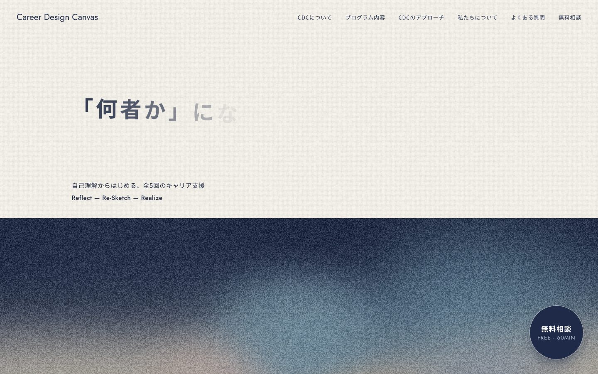
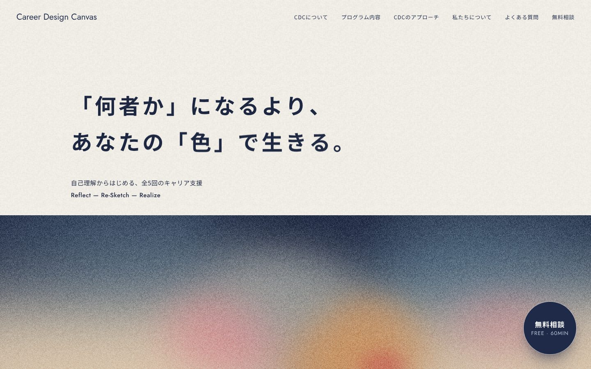
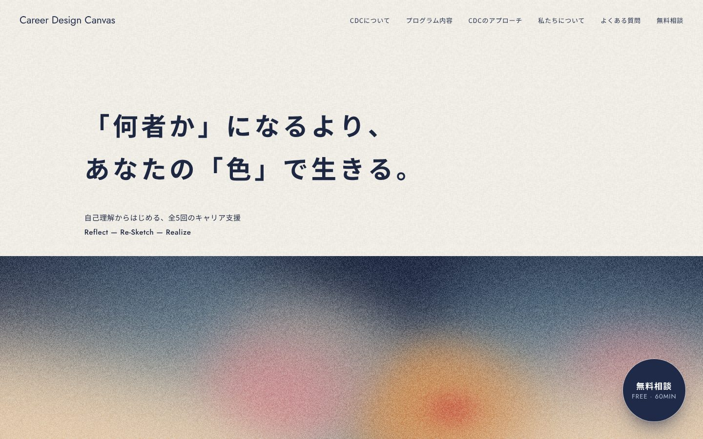

一番上の色の面を、VIの「夜明け」に
VIの色の名前（Eternal Navy＝夜、Dawn Blue＝これからはじまる青、Mist Gray＝霧、Sunrise Beige＝日の出、Savor Amber・Life Red、Moment Pink）の順に、上に夜の紺が残り、霧をへて、下の地平線から日がのぼる並びにしました。帯の下へは日の出の光がそのままページへにじみます（切れ目なし）。
B 夜明け（明けていく）
開くと夜明け前の紺から、約2.6秒で日がのぼって A の並びになる。一度だけ。見出しの文字が出るのと同じころに終わる。



ページで見る（読み込み直すともう一度）